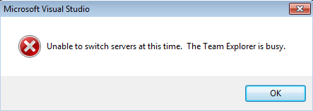

Using BIDS 2008 to access TFS 2010
Recently I had a client that needed to use BIDS to create some SSRS reports but they wanted to use TFS2010 for their source control. The latest version of BIDS is really a VS2008 shell so I knew it wouldn’t be as simple as installing Team Explorer. I was sure I wasn’t the first person to come across this issue so I pulled out my favorite research tool and did some research on the exact steps that need to be taken to enable Team Explorer for BIDS 2008.
I found several blog posts about the subject but this blog post by Joost van Rossum not only gave me the exact steps to Team Explorer in VS2008 so it would connect with TFS2010 but also was written from the perspective of using BIDS2008 and not just VS2008. Here is an overview of the steps that Joost lined out in his blog post:
- Install Team Explorer 2008 download link
- Install SP1 for Visual Studio 2008 download link
- Install VSTS 2008 SP1 Forward Compatibility Update for TFS2010 download link
- Once you have all those pieces installed you have to create your server reference like this
http://<serverName>:<port>/<vdir>/<collectionName> (e.g. http://TfsServer:8080/tfs/ProjectCollectionName)
which is different than you do in VS2010.
So I followed the above steps and thought everything was working great until I tried to log in to TFS using BIDS 2008 and received this error message popup: 
So I went back to my favorite research tool to do some more research and came across this blog post by Tom Hudley
At the end of his post I discovered that my problem was with a single character! So as soon as I removed the / on the end of my server url everything worked like a charm!